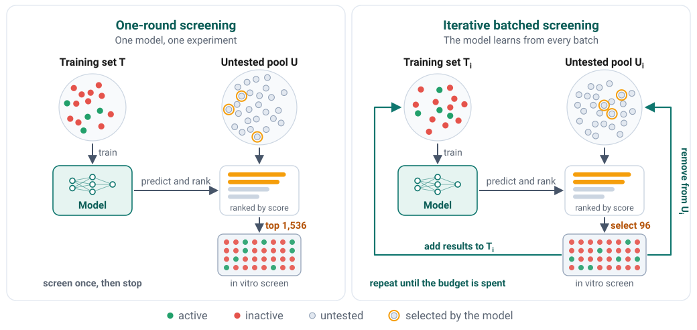
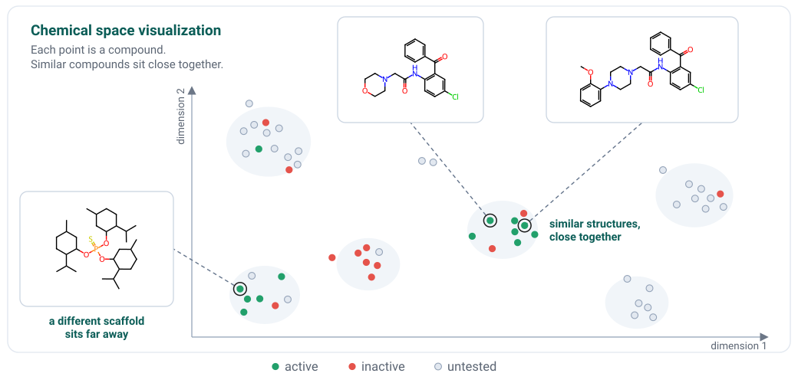
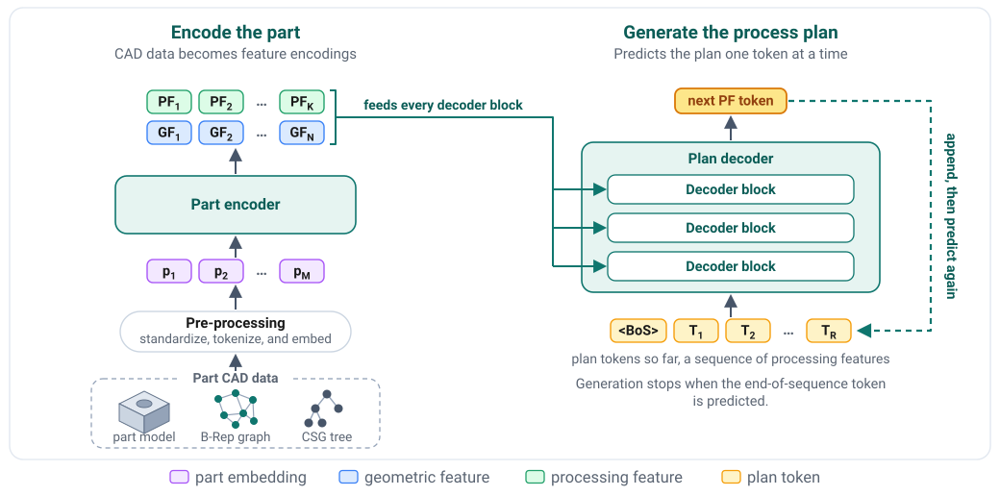

Research
My research leans into applied machine learning. I like taking a real scientific or engineering problem and carrying it from the first framing of the question to a working pipeline with results that can be trusted and reproduced.
The first thread of my work is chemistry and drug discovery. My doctoral work at the University of Wisconsin–Madison focused on iterative batched screening and active learning for early-stage drug discovery. The idea is to use models to decide which compounds to test next when experiments are expensive and budgets are finite. With my students I have continued this line into chemical space visualization and protein-ligand models for virtual screening.
Two results show what this looks like in practice. A random forest trained on about 430,000 screened compounds, with its predictions spread across 18 compute nodes, scored a synthesize-on-demand library of over one billion compounds in under three days. Of the 68 compounds it selected for testing, 31 were confirmed hits, a hit rate of about 46%. For iterative screening I designed a cluster-based selection strategy and benchmarked it on 107 target datasets. In a prospective screen on a new target, it recovered 20% of all hits after testing only 4% of the compound pool. The code for these projects is available in the active-learning-drug-discovery repository.


The second thread is manufacturing and operations. With collaborators at KFUPM and the University of Windsor I work on generative computer-aided process planning and on reinforcement learning for flexible job shop scheduling.

Beyond these two threads I have worked on supply-chain risk prediction, subsurface property prediction for reservoir engineering, and low-cost digital twin instrumentation. Most of this work is hands-on. I am involved in implementing the algorithms, building the data pipelines, and running large hyperparameter searches on compute clusters when the problem calls for it.
2026
- Hassan Mohamed, Moayad Alnammi, Ahmed Azab. “Cross-Modal Contrastive Alignment of B-Rep Graphs with Manufacturing Feature Prototypes for CAPP-GPT.” Manufacturing Letters (NAMRC 55), 2026. In Progress.
- Osamah Hussein, Moayad Alnammi, Ahmed Azab, Yasser AlMoghathawi. “Reinforcement Learning for Job-Shop Scheduling: A Systematic Literature Review.” Manufacturing Letters (NAMRC 55), 2026. In Progress.
- Bayan Aldahlawi, Moayad Alnammi, Abdulazeez Abdulraheem, Irfan Ahmad. “Exhaustive Feature Subset Screening Yields an Empirical Cost and Accuracy Pareto Frontier for Carbonate Permeability Prediction.” Scientific Reports. Revision submitted.
- Maha AlShammari, Moayad Alnammi, Moataz Ahmed. “Chemical Space Visualization at Scale: A Survey of End-to-End Pipelines and Dataset-Size Archetypes.” Journal of Cheminformatics (2026). Article
- Shirin Shahsavary, Moayad Alnammi, Javad Navaei, Ahmed Azab. “Risk Prediction in Design of Distributed Supply Chains Using Machine-Learning: A Bi-Objective Optimal Approach.” IEEE Access 14, 77958–77982 (2026). DOI
- Hassan Mohamed, Moayad Alnammi, Ahmed Azab. “Hybrid CNN-Graph Transformer Encoder with Autoregressive Decoding for CAPP-GPT.” Manufacturing Letters, in press (2026). Presented at the 54th SME North American Manufacturing Research Conference (NAMRC 54), 2026.
- Osamah Hussein, Moayad Alnammi, Ahmed Azab. “Cooperative Metaheuristic Approaches for Solving the Flexible Job Shop Scheduling Problem: A Sensitivity Analysis of the Search Parameters via an Actor-Critic PPO Reinforcement Learning.” NAMRC 54 (2026).
2025
- Adil Ahmed Bhameshan, Moayad Alnammi, Ammar Mohammed Alshammari. “Automation and Digitization of Falling Head Tests for Precise Hydraulic Conductivity Measurement.” ISEC 2025. Article
- Ahmed Azab, Moayad Alnammi, Hany Osman, Fazle Baki. “CAPP-GPT: A Large Multimodal Model via a Custom Encoder-Decoder Architecture for Macro-Computer Aided Process Planning.” TechRxiv preprint (2025). Preprint
2023
- Moayad Alnammi, Shengchao Liu, Spencer S. Ericksen, Gene E. Ananiev, Andrew F. Voter, Song Guo, James L. Keck, F. Michael Hoffmann, Scott A. Wildman, Anthony Gitter. “Evaluating Scalable Supervised Learning for Synthesize-on-Demand Chemical Libraries.” Journal of Chemical Information and Modeling 63(17), 5513–5528. DOI
2019
- Shengchao Liu*, Moayad Alnammi*, Spencer S. Ericksen, Andrew F. Voter, Gene E. Ananiev, James L. Keck, F. Michael Hoffmann, Scott A. Wildman, Anthony Gitter. “Practical Model Selection for Prospective Virtual Screening.” Journal of Chemical Information and Modeling 59(1), 282–293. (* equal contribution) DOI
Current Students
- Hassan Mohamed. Ph.D. student. Deep generative models for computer-aided process planning (CAPP-GPT).
- Maha AlShammari. Ph.D. student. Chemical space visualization.
Advised Theses
- Bayan Aldahlawi. “Cost Optimized Machine Learning for Predicting Permeability in Heterogeneous Carbonate Reservoirs.” M.S. thesis, KFUPM (2026). Record
- Oulaya Elargab. “UPL-GAT: Unified Protein-Ligand Graph Attention Networks in Virtual Screening.” M.S. thesis, KFUPM (2026). Record
- Adil Ahmed Bhameshan. “Low-Cost Digital Twin System for Hydraulic Conductivity Monitoring with Environmental Variations.” M.S. thesis, KFUPM (2025). Record
Advised Master's Projects
- Turki Alsadhan. “Agentic MLOps: Agentic Control Plane for Diagnosis-Guided Drift Response in Production ML Systems.” Professional master's project, High Performance and Cloud Computing, KFUPM. In progress (2026).
- Faisal Alzhrani. “Real-Time GPU Particle-Based Fluid Simulation with Vision-Based Hand Interaction.” Professional master's project, M.S. in Visual Computing, KFUPM (2026).
Funded Projects
- “Generative Computer-Aided Process Planning: A Sustainable Integrated Operations Research and Predictive Analytics Approach for Hybrid Production.” Interdisciplinary Research Center for Smart Mobility and Logistics, KFUPM. PI Ahmed Azab, Co-I Moayad Alnammi. Project page